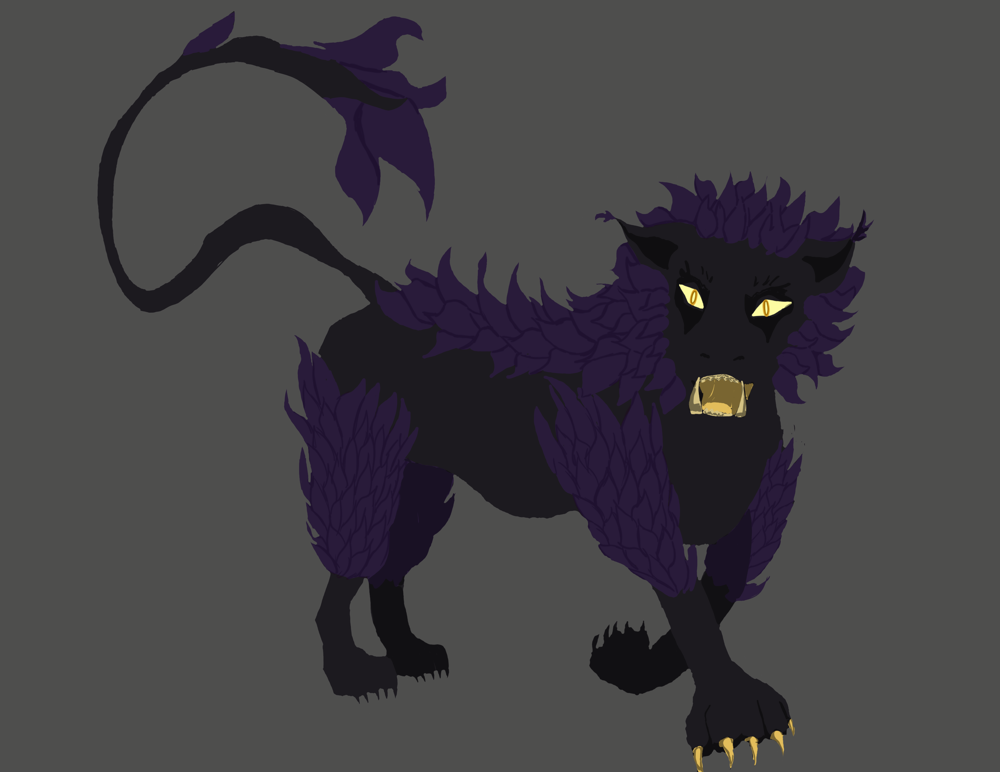
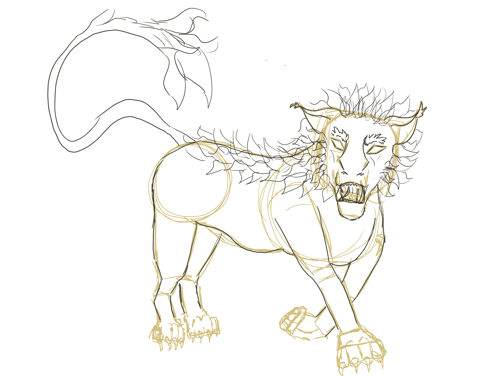
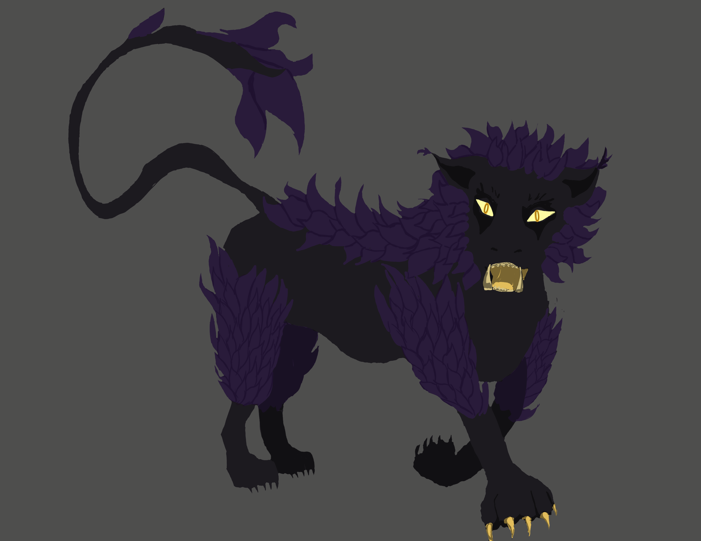
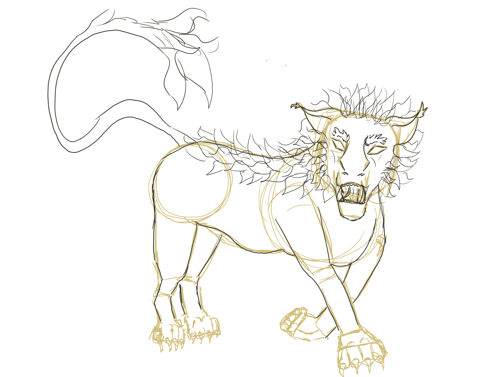

This piece of concept art was done during my internship as a game artist for Castix Studio, in development of their game Medieval Lands. It is supposed to be a "perversion" of a normal lion. It takes into account ideas of pride and royalty in its feathers and coloration with a twist of vanity.
This was a several step process before getting to the final product. This includes research, three stages of sketches (thumbnails, refined, and mockup), color passes, and multiple checks through the final illustration.
This piece was also my first attempt at professional concept art. Through the process, I learned extensively about the role of concept/game artists, the game development pipeline, and professional skills in general.
Back to Gallery